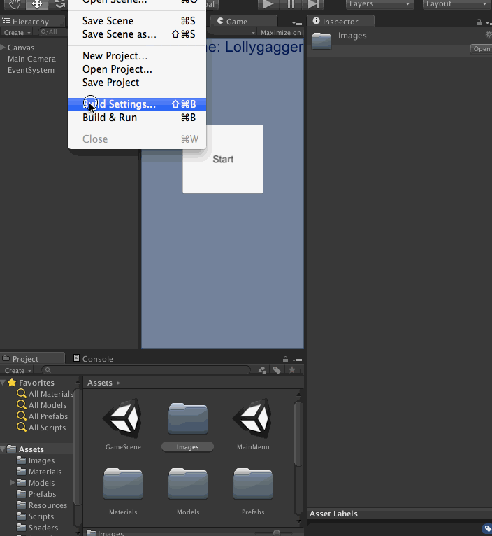
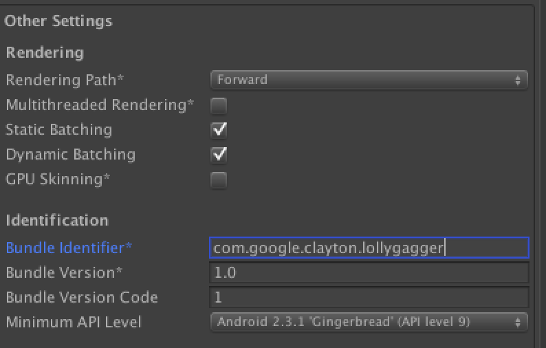
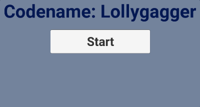
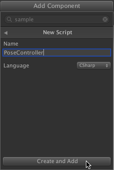
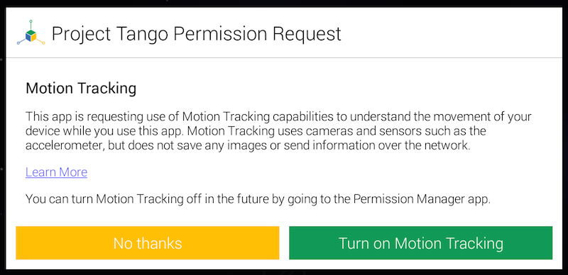

This codelab will teach you how to extend an existing Unity game to use Project Tango's motion tracking functionality to control the camera.

What you’ll learn
- Development tools and configuration to build Unity projects targeted for Android.
- How to design a game that can be used with a Project Tango device.
- What the key motivations are to create games and apps for Project Tango.
- Links to information for developing and publishing great Project Tango applications.
What you’ll need
- A Project Tango device with a micro USB cable
- Unity (for this codelab, we will use Unity 4.6.4)
- Android SDK with package levels 17-20 installed
- The Project Tango Unity SDK
- Lollygagger Sample game which we’ll be using in this codelab.
Game Summary
For this codelab, we'll be using a simple and entertaining game, called "Lollygagger". The main game play is to travel through a virtual playfield, shooting Lollipop "cannonballs" at the Androids that are lollygagging around. Key features of note are:
- Two different Unity scenes, one for the main menu, and one for game play.
- Ability to play in 2D mode as well as in 3D mode using the Project Tango device to move around.
- Flinging lollipops at the targets while moving around in the virtual world.
- Super flexible and simple game level logic to allow infinite possibilities of hours of android-shooting fun!
- Start Unity. If you have not developed an Android application with Unity before, make sure you configure the Android SDK within Unity. In Unity, click Preferences > External Tools > Android SDK Location, then select the folder where you downloaded and unzipped the Android SDK.
- Click File > New Project and create a new project named ‘Lollygagger_tango’.
Let's build and run the non-Tango version of the game. From there, we'll add Project Tango support.
Import the game assets
Import the sample game scenes and assets into your project:
- Click Assets > Import Package > Custom Package.
- Select the
lollygagger_step0.unitypackagefile you downloaded - Click Import.
Configure the Android player
- Configure Unity to build an Android application:
- Click File > Build Settings… to open the Build Settings window.
- Select Android in the platform list, if it isn’t selected already.
- Click the Switch Platform to make Android your default build target.
- Add the game scenes to the build:
- In the Project explorer, select the Assets folder.
- Drag and drop the
MainMenu.unityscene to the Scenes In Build list within the Build Settings dialog. - Then drag and drop the
GameScene.unityscene into the list underMainMenu.unity.MainMenu.unitymust be the first one on the list.

- Configure the Unity player settings:
- Click the Player Settings… button in the Build Settings window. This opens the PlayerSettings Inspector panel back in the Unity Editor.
- Click on the Resolution and Presentation section to expand it.
- Find the Default Orientation drop-down and set it to Landscape Left. This is the correct orientation for applications on a Project Tango device.

- Click on the Other Settings section to expand it.
- Find the Minimum API Level field and set it to Android 4.2 'Jelly Bean' (APK level 17) or higher.
- Find the Bundle Identifier field. Enter a valid package name for your application (such as
com.mycompany.tango.codelab) that follows the naming rules for Java packages and/or .Net namespaces. Typically this is of the form: com.<yourcompany>.<appname>

- Save your project! Better safe than sorry :)
- Build and run the application on the device:
- Connect your device to the computer using the USB cable.
- From the Build Settings window (File > Build Settings if you do not still have it open) click Build and Run. This should open a ‘Save As’ dialog.
- Save the application as
Lollygagger.apk. - Make sure the device is turned on, and accept any prompts that appear. This pushes the application named
Lollygaggerto your device and launches it.
Congratulations! If you can play the starter project game on your Android device, you should be ready to go!

Troubleshooting
Even the most simple things can have gotchas! Here are a couple and what to do about it. If you’re still having problems ask for help!
Issue
- I'm only seeing the Unity splash screen and then a blue screen with nothing happening
Solution
- Make sure you have added the
MainMenu.unityandGameScene.unityscenes, in that order, to “Scenes in Build” in the Build Settings.
Issue
- When trying to run Lollygagger on my device, it says No Android Device Found!
Solution
- Make sure your device is turned on.
- If the device is on, you should see a notification in the notification tray on your device that says ‘USB Debugging Enabled’. If you don’t see this notification, follow Step 2 on http://developer.android.com/tools/device.html#setting-up to enable USB debugging on your device, then plug your device in again.
Now that we’re able to run the game on the Project Tango device in 2D mode, let’s add the Project Tango motion tracking functionality so you can use the device to move around in the game world.
Import and Add the Project Tango SDK
If you haven't already, download the Project Tango Unity SDK from the Project Tango developer site.
- Click on Assets > Import Package > Custom Package.
- Select the Project Tango SDK unity package
TangoSDK_Nash.unitypackagethat you downloaded. - This brings up the Importing package window in Unity. Make sure all files are selected and click the Import button.
- Verify that you see an
Assets/TangoSDKfolder in the Project tab.
Configure the Tango prefab Gameobject
- Open the GameScene scene by double clicking
Assets/GameScene. - Drag and drop the Tango Manager prefab (
Assets/TangoSDK/Core/Prefabs/Tango Manager) into the root of the Hierarchy tab. - Select the Tango Manager in the hierarchy, and in the Inspector tab check Enable UX Library. This enables the UX Library Framework, which shows some helpful screens to users while using the application.
Disable touch based movement
Movement in the virtual world will be controlled by movement in the real world via Project Tango. As a result, we can remove the code that manages the movement via touch.
- In the Hierarchy panel expand the Player object to show the Main Camera object. Select Main Camera, then in the Inspector panel find the
Mouse Lookingscript and disable it by clearing the checkbox.
Remove the motion controls associated with the project:
- Select Player in the Hierarchy panel.
- In the Inspector view, find the Movement script. Click on the gear icon and select Edit Script. This opens up the
Movement.csfile in MonoDevelop. - In MonoDevelop, remove the method
FixedUpdate(). Save the file in MonoDevelop and come back to the Unity Editor.
You’ve just imported the Project Tango SDK, enabled the Tango Manager prefab which controls most of the Project Tango functionality for you, and removed the motion controls included with the project. We’re going to use Project Tango to control the player’s motion.
Create PoseController script
- Select the Player object in the Hierarchy panel.
- Click the Add Component at the very bottom of the Inspector panel.
- Select New Script, enter
PoseControlleras the name, make sure that the Language is set to CSharp, then click Create and Add.

Add Skeleton code
Open the PoseController script by double clicking on it in the Assets folder. Then replace the contents with the following code:
You probably noticed that there are a lot of //TODO: comments in the starter code. Don't worry! In the next few sections we will be filling those in and explaining things on the way.
Save all the changes in MonoDevelop and switch to the Unity Editor. If there are compilation errors or other issues, they will appear in the Unity console log.
Goal
Project Tango applications using motion tracking need to ask users for permission to use the motion tracking camera and handle their response. In this section, we'll define and add the permission callbacks for our application.
Define the permissions callback
First, we will define how we handle the Permissions. Find the comment // TODO: Implement permissions callback and replace it with the following function:
If the permissions request was successful, we have some boilerplate to start the Project Tango framework. If the permissions request was unsuccessful (e.g. the user rejected a permission we require), we need to handle it. To keep things simple, we show a toast message in this example.
Request permissions
Now that we have a Permissions callback, we need to register it. Find the comment //TODO: Register and request permissions callback in the RequestPermissions() function and replace it with the following code:
This registers a callback and triggers the Permissions request dialog.
Run the app
Make sure all the source code is saved in MonoDevelop by clicking File > Save All. (If it is disabled, that means everything is ready!).
Switch back to the Unity editor and click File > Build & Run (or Cmd + B). If everything is ready, it will build the app and start it on your device.
Click Start in the game, and it should initialize the Tango environment by prompting for permission then initializing the motion tracking system.
Moving around still does not move the player in the game, so let's do that next!
Goal
After all that setup, we're still not doing anything with motion tracking. Let's change that! In this section, we will define our callback to handle poses from Project Tango and translate the data from Project Tango to Unity coordinate systems.
Define the pose callback
We'll be getting pose data through a callback, which we need to define. Find the comment // TODO: Implement pose callback in the OnTangoPoseAvailable function and replace it with the following code:
There's a bit more going on here, so lets step through things.
First, if there is no pose data, let's just return from the method since there is no data process.
Next, we use the first if statement to define the base and target frames of reference that we're interested in. For motion tracking alone, you can consider this boilerplate since these are the only values we're interested in. If we were using area learning or depth perception, there would be other frames of reference we'd need to use. You can find more information on frames of reference in Project Tango at https://developers.google.com/project-tango/overview/frames-of-reference.
Finally, we check if the pose we got is valid. We can expect to get other pose statuses like initializing or, if we're unlucky, invalid, and don't want to do anything with those. If things look good, we grab the translation and orientation and save them in tangoPosition and tangoRotation, respectively. You can learn more about poses at https://developers.google.com/project-tango/overview/poses.
Add a Transformation Helper method
Since Tango's coordinate system is different than Unity's, we need to transform the tango pose position and rotation into Unity's coordinate system. Since we do it a lot, we can make a helper function. Find //TODO: Implement Transformation Helper method and remove the return statement. Then paste in this method:
Transform the pose to the Unity coordinate system
Find the comment //TODO: Convert pose to Unity in the function FixedUpdate() and replace it with the following code:
Project Tango poses use a different coordinate system convention than Unity. In the starter code, we included the function TransformTangoPoseToUnityCoordinateSystem to handle the conversion for you.
Move the player
Finally, we set the new position and rotation to the converted values. At the bottom of FixedUpdate(), replace the comment: //TODO: Move the player with the following code:
We're now done with PoseController, great job! Now save your file, go back to Unity, and select File > Build & Run to see your changes in action! Depending on your development environment, you might see a warning about line endings. You can safely convert or ignore.
After the app starts, you will be prompted to enable motion tracking. Make sure you pick Turn On Motion Tracking.

Troubleshooting
If your device gets stuck in initialization or something doesn't seem to be working right, try restarting your device and doing Build & Run again.
Congratulations! You've just converted an existing game to use Project Tango motion tracking. Where do you go from here?
- Our implementation here is pretty minimal. Add additional functionality or improve the usability of the game.
- Experiment with different scaling factors to map motion in the real world to the virtual world.
- Try porting a different project, especially one with a different camera and control scheme.
- Check out our Unity samples for examples of using our other functionality, like depth and area learning.
Final scripts
Here is what your final scripts should look like. If you had any issues following the codelab, compare your code against these models, or copy/paste the final versions into your project.